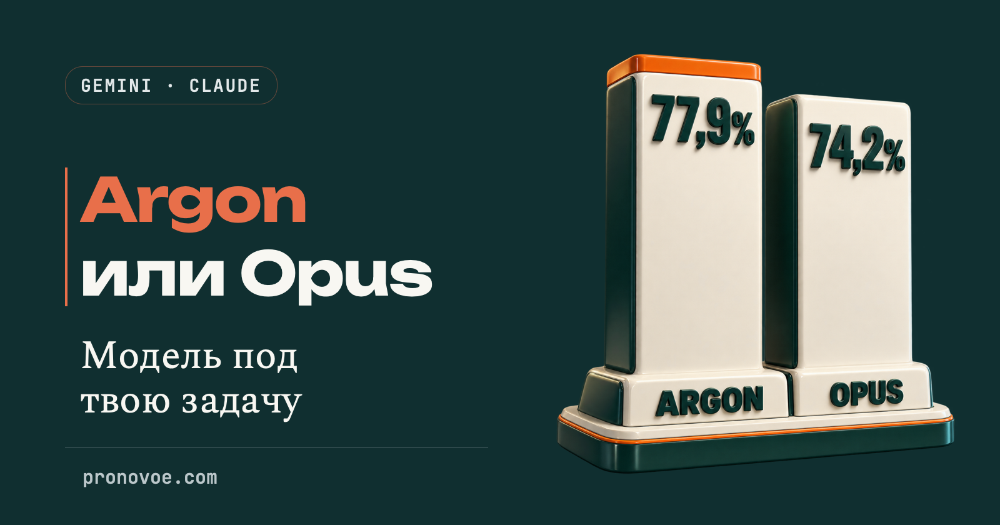
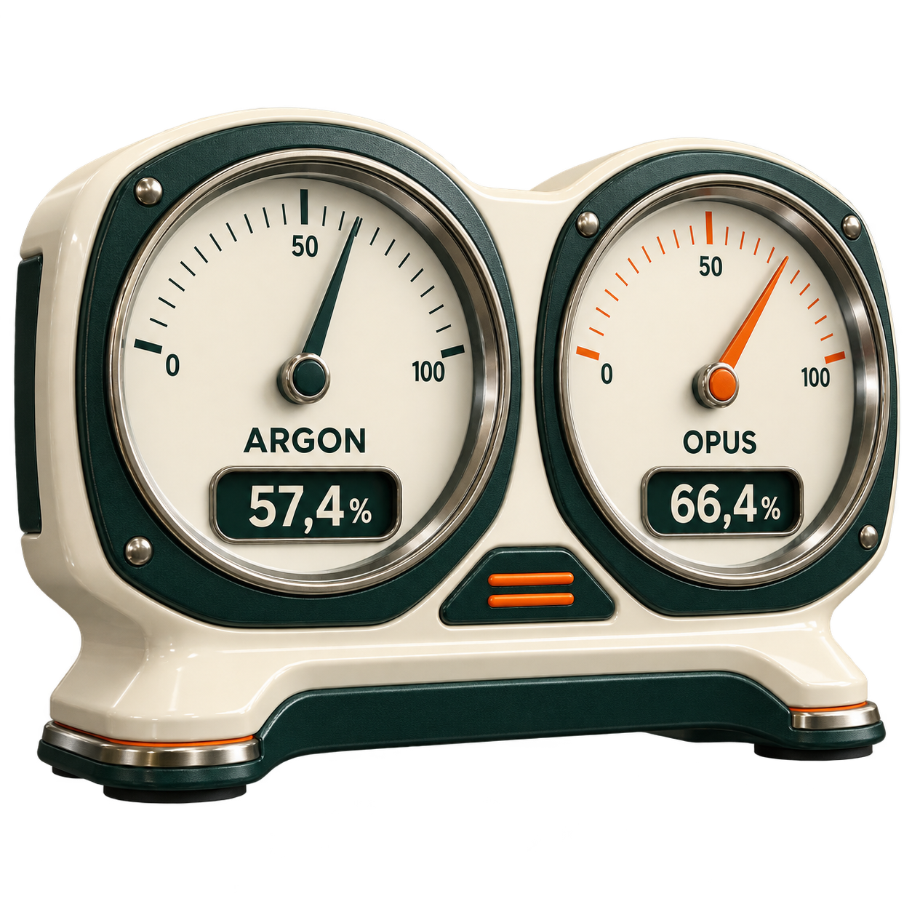

Инструкция · Нейросети · Работа.
Gemini 4 Argon или Claude Opus 5.5: какую модель выбрать
Средний уровень
Gemini 4 Argon обошёл Claude Opus в одном тесте на код, а в другом сравнении впереди уже Opus. Какую модель выбирать для своей работы? Разберём, что именно измеряют эти числа, где проверить доступ и как поставить задачу. В конце соберём выбор в шпаргалку, которую можно сохранить.

Содержание статьи
Нужно написать код и получить проверяемый результат
Если выбираешь модель для работы с программным кодом, Argon стоит рассмотреть среди первых кандидатов. Начни с доступности модели и типа своей задачи, затем сравни данные тестов.
В опубликованном Google тесте DeepSWE v1.1 Argon набрал 77,9%, Opus - 74,2%. Округлённо это 78 и 74 задачи из ста. Тест проверяет работу с программным кодом; это ориентир для выбора, а не обещание такого же результата на твоём проекте.
У этих двух моделей нет единого победителя во всех задачах. Следующая работа требует уже не одного понятного изменения.
Нужно самому пройти несколько шагов и доделать работу
Представь задачу, в которой модель открывает файлы, запускает команды, видит ошибку, исправляет её и снова проверяет результат. Здесь важен весь путь. Одного удачного фрагмента кода недостаточно.
В Terminal-Bench 4.0 результат Opus выше: 66,4% против 57,4% у Argon. Для работы в терминале с несколькими связанными действиями это повод рассмотреть Opus. Терминальные задачи тоже бывают связаны с кодом, поэтому граница между моделями не проходит по слову «программирование». Сам терминал - окно для текстовых команд на компьютере.

Слова «короткая задача» и «длинная работа» удобны для первого выбора. Но тесты не устанавливают границу в минутах: после часа любая задача не становится автоматически задачей для Opus. Смотри на количество связанных действий и на то, как проверишь итог.
Сначала проверь, есть ли у тебя доступ
Менять рабочий инструмент ради таблицы бессмысленно, если новая модель в твоём аккаунте недоступна. У Argon различаются приложение Gemini, Google AI Studio и обращение из программы через API.
| Где работать | Что нужно | Что проверить |
|---|---|---|
| Приложение Gemini | Подписка Google AI Pro или Ultra | Открой список моделей и проверь, есть ли Argon в твоём аккаунте |
| Google AI Studio | Доступ к Argon по условиям платного Gemini API; отдельно заявлен доступ для AI Ultra | Открой выбор модели и найди Argon. Сам доступ к AI Studio не означает доступ к этой модели |
| Gemini Developer API | Платный доступ к модели gemini-4-argon | Поддерживаемый регион, биллинг и лимиты |
России нет в официальных списках доступности Gemini app, AI Studio и Gemini Developer API. Русский язык интерфейса этого не меняет. Прямой официальный доступ из России здесь не обещается.
Список стран для AI Studio и API есть в справке Google. Перед оплатой проверяй нужный канал и свой регион, а не только название подписки.
Как запустить практические примеры
Argon и Opus - модели, которые выполняют запрос. Gemini и Claude Code - инструменты, через которые с ними работают. Для примеров ниже используем Claude Code: он создаёт файлы в папке на твоём компьютере. Обычный веб-чат может показать код в ответе, но это ещё не сохранённый файл.
Нужны установленный Claude Code, вход в аккаунт и доступ к Opus по твоему плану. Если программы ещё нет, начни с официальной инструкции установки и входа. На бесплатный веб-чат этот маршрут не рассчитан.
На Mac открой «Программы → Утилиты → Терминал». Вставляй команды по одной, после каждой нажимай Enter. Первая создаст папку на рабочем столе, вторая откроет её, третья запустит Claude Code с моделью Opus.
mkdir -p ~/Desktop/argon-raboty cd ~/Desktop/argon-raboty claude --model claude-opus-5-5
На Windows открой PowerShell и используй этот вариант. Он находит настоящий рабочий стол, в том числе если тот находится в OneDrive.
cd ([Environment]::GetFolderPath("Desktop"))
New-Item -ItemType Directory -Force argon-raboty
cd argon-raboty
claude --model claude-opus-5-5Если появится вопрос о доверии, проверь, что показана именно папка argon-raboty, выбери «Yes, I trust this folder» и нажми Enter. После запуска вставь один запрос ниже. Разрешай создание файлов этой работы; если программа просит дополнительные доступы, сначала прочитай, что именно ей нужно.
Результат: в окне Claude Code открыт разговор в папке argon-raboty. После выполнения запроса там появится HTML-файл. Открой его двойным щелчком. Перед следующей самостоятельной работой введи /clear: начнётся новый разговор, а сохранённые файлы останутся.
Если у тебя уже доступен Argon
В Google AI Studio открой Playground и выбери Argon в настройках модели. Этот путь подходит только при поддерживаемом регионе и доступе к платной модели. Если Argon в списке нет, остановись на проверке доступа; замена на другую модель не будет проверкой Argon.
Для первого сравнения возьми запрос про пеликана ниже. Вставь его в поле сообщения, но весь последний абзац с поручением проверить и открыть файл замени указанием из блока ниже: веб-чат не открывает файл на твоём компьютере. Нажми Run и дождись полного ответа.
Верни весь HTML-код в одном блоке кода, от <!doctype html> до </html>, без сокращений и пропущенных частей. Я сохраню его в pelikan-argon.html и открою в браузере. Не утверждай, что файл уже создан на моём компьютере.
Скопируй содержимое полученного блока, без строк с тройными обратными кавычками. На Mac открой TextEdit, выбери «Формат → Сделать простым текстом», вставь код и сохрани на рабочем столе как pelikan-argon.html. Если TextEdit предлагает добавить .txt, сохрани расширение .html. На Windows вставь код в Блокнот, при сохранении выбери тип «Все файлы», имя pelikan-argon.html и кодировку UTF-8.
Открой сохранённый файл двойным щелчком. Если вместо картинки видишь код, проверь, что имя заканчивается на .html, а не .html.txt. Если результат не работает, опиши в том же чате, что именно видишь, затем добавь такой запрос:
Разбери свой предыдущий HTML-код и исправь описанную мной проблему. Если данных не хватает, попроси текст ошибки или содержимое моего файла. Верни исправленный HTML целиком, без сокращений. Локальный файл и браузер на моём компьютере проверю я; не утверждай, что уже открыл их.
Сохрани новый полный код вместо прежнего и снова открой файл. Дальнейший запрос «открой файл сам» предназначен для Claude Code с доступом к папке, а не для веб-чата AI Studio.
Результат: у тебя открыт pelikan-argon.html. Файл от Claude Code сохрани отдельно как pelikan-opus.html, чтобы не перепутать две версии. На обеих проверь педали, движение фона и включение и выключение музыки. Это сравнение твоей конкретной работы, а не замена независимому тесту. Устройство запросов и настроек AI Studio.
Пять заданий: от анимации до интерактивного музея
Для этих пяти работ два приведённых теста не устанавливают победителя. Ниже запросы для Claude Code с Opus: они задают файл, содержание, управление и проверку. Если используешь Argon в AI Studio, сначала пройди ветку сохранения HTML выше. Результаты отдельных примеров не являются сравнительным тестом моделей.
Пеликан на велосипеде с музыкой
Анимация запускается при открытии, музыку включаешь отдельной кнопкой. SVG - формат, в котором браузер рисует линии и кривые вместо загрузки готовой картинки.
Создай pelikan.html: пеликан едет на велосипеде. Всё изображение нарисуй средствами SVG, без готовых картинок и внешних библиотек. У пеликана большой клюв. Он крутит педали, колёса вращаются, фон движется назад. Анимация начинается сразу после открытия, весь рисунок помещается в окно браузера. Добавь кнопку «Музыка». По нажатию браузер играет короткую весёлую мелодию в ритме педалей, по повторному нажатию выключает её. Для звука не подключай второй сервис. Проверь открытие страницы, движение и оба состояния кнопки. Затем открой файл в браузере.
Проверка: Открой pelikan.html: пеликан должен крутить педали. Нажми «Музыка», затем нажми ещё раз: звук должен включиться и выключиться. Эта работа не требует внешних библиотек.
Мир из кубиков, в котором можно строить
Для объёмной сцены используется Three.js - библиотека для 3D в браузере. Она загружается из интернета, поэтому при открытии игры нужна сеть.
Создай minecraft.html: небольшую браузерную игру с миром из кубиков. Сделай землю, траву, камни, деревья и небо. Управление: WASD - ходьба, пробел - прыжок. После клика по игровому полю мышь поворачивает взгляд. Esc освобождает курсор. Левая кнопка убирает кубик, правая ставит новый. Цифры 1-4 выбирают материал, выбранный материал виден внизу. Подсказки напиши по-русски. Подключи Three.js из интернета. Текстуры нарисуй кодом, остальные части игры помести в этот HTML-файл. Проверь загрузку, управление и отсутствие ошибок. Открой результат в браузере.
Проверка: Кликни по миру, попробуй WASD и пробел, убери и поставь кубик. Затем нажми Esc. Если мышь не поворачивает взгляд, сначала кликни внутри игрового поля.
Гонка по фотографии твоего стола
Сфотографируй стол сверху, держа телефон горизонтально. Снимок будет поверхностью трассы, а не полноценной 3D-моделью всех предметов.
Создай gonka.html: браузерную 3D-гонку по фотографии стола. На старте нужна кнопка «Загрузить фото стола». Выбранный снимок становится полом трассы. До загрузки фото показывай клетчатую поверхность. Поставь конусы по краю трассы и финишную арку. Цель - три круга. Камера следует сверху и сзади машинки. Управление стрелками или WASD, для телефона добавь экранные кнопки. Показывай текущий круг, время и лучший результат. Подключи Three.js из интернета, остальное сохрани внутри одного файла. Проверь загрузку фото, движение и счётчик кругов. Открой страницу в браузере.
Проверка: Нажми «Загрузить фото стола» и выбери снимок. Проверь, что он стал поверхностью трассы, машинка отвечает на кнопки, а при движении меняются время и круги. Для Three.js нужен интернет.
Вертолёт над ночным городом
Здесь важно управление, а не только красивая стартовая картинка. Город и вертолёт собираются кодом, без скачанных моделей.
Создай vertolet.html: объёмную сцену с футуристичным вертолётом над ночным городом. Корпус, здания и детали собери кодом, без готовых 3D-моделей и картинок. У вертолёта светящиеся полосы и вращающийся винт. Камера поворачивается при перетаскивании мышью, колёсико приближает и отдаляет её. WASD перемещают вертолёт, пробел поднимает, Shift опускает. Размести русскую подсказку по управлению. Используй Three.js с загрузкой из интернета, остальной код сохрани в одном файле. Проверь камеру, движение, подъём и спуск. Затем открой файл в браузере.
Проверка: Поверни камеру, подними вертолёт пробелом и опусти Shift. Проверь движение по WASD. Столкновения со зданиями в запрос не включены. Если они нужны, добавь условие «вертолёт не должен проходить сквозь здания».
Музей компьютеров Apple
Справочный материал требует ещё одной проверки: красивые карточки не подтверждают правильность дат и характеристик.
Создай muzey.html: интерактивный музей компьютеров Apple, начиная с Apple I 1976 года. В зале размести 12 известных моделей по годам, нарисуй компьютеры кодом, без картинок из интернета. По залу можно двигаться стрелками и колёсиком мыши. Сверху покажи шкалу лет. Клик по экспонату открывает карточку с названием, годом выпуска и объяснением его значения в двух-трёх русских предложениях. Проверь названия и годы по источникам Apple. Не придумывай цены, объёмы продаж и неизвестные характеристики. Если подтверждения нет, не добавляй утверждение. Всё сохрани в одном файле без внешних библиотек. Проверь движение по залу и открытие карточек, затем открой файл в браузере.
Проверка: Пройди по залу и открой несколько карточек. Сверь годы и названия с источниками Apple. Указание «проверь» помогает задать работу модели, но не заменяет твою проверку справочных фактов.
Одинаковое задание для двух моделей
Если обе модели тебе доступны, сравни их на одном задании. Сохрани результаты отдельно и проверь одни и те же действия. Для короткой визуальной задачи из основы подойдёт такой запрос:
Сделай один файл istrebitel.html: пеликан едет на заднем колесе велосипеда по крылу летящего истребителя. Стиль - объёмные кубики. Покажи движение, помести сцену целиком в окно браузера и проверь открытие файла.
Отдельно сравни соответствие запросу, управление, ошибки и число исправлений. Два красивых первых кадра не показывают, какая модель довела работу до результата.
Если файл не работает или не находится
Слова «готово» в чате недостаточно. Открой файл, нажми кнопки и проверь управление. Если видишь ошибку, опиши именно её, а затем отправь запрос на исправление:
Открыл файл, а там пусто, ничего не двигается. Открой этот файл сам с начала, воспроизведи проблему и исправь её. Затем проверь весь путь: открытие, управление и нужный результат. Исходные требования сохрани.
Первое предложение замени на свою ошибку, например «музыка не выключается» или «машинка не едет». Остальную часть запроса оставь.
| Что видишь | Что сделать |
|---|---|
| command not found: claude | Команда Claude Code не найдена. Пройди установку из официальной инструкции выше. Если программа уже установлена, открой новое окно терминала и проверь снова. |
| does not support this model | Выйди из Claude Code двойным Ctrl+C, выполни claude update и снова запусти команду из раздела запуска. Если модель всё ещё недоступна, проверь план и список моделей через /model. |
| Файл не появился на рабочем столе | Попроси Claude назвать полный путь к файлу. На Windows используй запуск через GetFolderPath из раздела выше, чтобы учесть OneDrive. |
| Mac спрашивает о доступе к рабочему столу | Если работаешь именно в созданной папке, разреши терминалу доступ к ней. Иначе запись файла туда может быть заблокирована. |
| Вместо 3D-игры пустой экран | Проверь интернет: три работы подключают Three.js. Обнови страницу. Если это не помогло, отправь описание пустого экрана вместе с запросом на исправление. |
| Мышь не поворачивает взгляд в мире из кубиков | Кликни внутри игры, затем двигай мышь. Esc возвращает обычный курсор. |
| Фото трассы растянуто | Используй горизонтальный снимок стола сверху. При необходимости попроси сохранить пропорции фото. |
| В музее появилась сомнительная дата | Проверь источник Apple и попроси исправить конкретную карточку. Сомнительное число не оставляй ради красивого оформления. |
Чего две таблицы не говорят
DeepSWE и Terminal-Bench проверяют разные виды работы. Они не дают готового ответа для личного письма, сценария видео или выбора темы блога. Для таких задач сравни пригодность результата на своём материале и используй уже доступный инструмент.
По методологии Google, данные Argon измерялись Google, а часть результатов других моделей взята из их опубликованных отчётов и рейтингов. Это не один независимый прогон всех моделей в одинаковом окне. Методология Google объясняет, откуда взяты числа.
Выбор «Argon для небольшой задачи с кодом, Opus для связанной работы в терминале» - практический ориентир из этих ограниченных данных. Обе модели могут выполнить и другой тип работы. Финальная проверка остаётся той же: открыть результат и пройти нужные действия.
Шпаргалка перед следующей задачей
| Твоя задача | С чего начать | На что опираться |
|---|---|---|
| Работа с программным кодом | Рассмотри Argon, если он доступен | В DeepSWE v1.1 у него выше результат. Это не гарантия для каждой задачи |
| Цепочка действий в терминале: файлы, команды, ошибки | Рассмотри Opus | В Terminal-Bench 4.0 у него выше результат. Деления по минутам здесь нет |
| Небольшая HTML-страница, игра или анимация | Начни с уже доступного инструмента | Примеры выше показывают постановку задачи в Claude Code, а не победителя двух моделей |
| Письмо, пост, пересказ или исследование | Оцени результат на своём материале | Эти два теста не выбирают модель для такой работы |
| Хочешь сменить модель ради ставок API | До 30 ноября сравни вводные ставки Argon; с 1 декабря пересчитай | Число токенов и попыток у моделей может различаться |
| Нужен прямой официальный доступ из России | Проверь регион до оплаты | Поддержка РФ для этих каналов Argon не заявлена |
КАК ВЫБРАТЬ МОДЕЛЬ Для работы с кодом рассмотри Argon: выше результат DeepSWE v1.1. Для цепочки действий в терминале рассмотри Opus: выше результат Terminal-Bench 4.0. Это ориентиры из двух тестов, а не гарантия. Короткая и длинная задача здесь не делятся по минутам. Письмо, пост или исследование: эти тесты не выбирают победителя. Небольшая игра или страница: начни с уже доступного инструмента. Перед оплатой проверь регион, нужную модель и канал доступа. Ставки API не равны цене подписки или готовой работы. После выполнения открой файл и проверь управление, кнопки и факты. Если что-то не работает, назови ошибку и попроси воспроизвести её и исправить.
Частые вопросы
Argon теперь лучше Opus?
В DeepSWE v1.1 он выше. В Terminal-Bench 4.0 выше Opus. Выбирай по характеру работы и проверяй полученный результат.
Если задача займёт час, нужен только Opus?
Нет. У тестов нет такой границы по часам. В речи «длинная работа» означает цепочку действий, а не точное время по таймеру.
У меня подписка. Разница в ставках API поможет?
Не обязательно. API - отдельный способ оплаты обращений к модели из программы. Тарифы на токены не описывают цену и лимиты твоей подписки.
Можно попробовать Argon бесплатно?
Обычного Free tier для этой модели в Gemini API нет. Бесплатная регистрация в AI Studio сама по себе не открывает Argon. Проверяй условия именно выбранной модели.
Тарифы и источники
Актуально на 22 октября 2026. USD за миллион токенов: токен - часть текста, которой сервис измеряет запрос и ответ. Standard API, без кэширования и специальных режимов. У Argon выходные токены включают внутренние рассуждения модели, а не только видимый ответ. Это не цена подписок и не стоимость законченной задачи.
| Модель и период | Запрос | Ответ |
|---|---|---|
| Argon по 30.11.2026 включительно | $2 | $10 |
| Argon с 01.12.2026, объявлено Google | $4 | $20 |
| Opus, базовые ставки на дату проверки | $4 | $20 |
При одинаковом числе токенов вводные ставки Argon вдвое ниже ставок Opus. С 1 декабря Google объявил их удвоение. При выполнении работы модели могут потратить разное число токенов и попыток, поэтому готовая задача не обязана обходиться вдвое дешевле.
Источники: тесты Google, прайс Gemini API, прайс Claude API, страны Gemini app.
Модель выбрана. Что поручить ей дальше
Так зачем нужен Opus, если Argon выше в тесте на код? В другом тесте, на действия в терминале, впереди Opus. Держи обе модели в списке кандидатов и выбирай по своей работе. Ни короткий запрос, ни час за компьютером сами по себе не определяют победителя.
После выбора модели остаётся собрать сам процесс: дать материалы, записать правила, связать результат с контентом, сайтом или заявкой клиента. Ниже - как нейросети делают такую работу без знания кода.
Что можно делать с нейросетями, если не знаешь кода?
Чтобы почувствовать размах, посмотри Концентрат Ивана Сергеева. ИИ-агенты на твоих глазах собирают продукт, контент, сайты и воронки без кода. Это основа под любую цель: свои услуги, партнёрка, чужой бизнес. Три дня бесплатно, VIP с четвёртым днём - 990 ₽
Забрать КонцентратУже знаешь, чего хочешь? Тогда в мастер-группу Ивана: система продаж на ИИ без продюсера и технаря, сопровождение и сообщество
Заполнить анкету предзаписиНабор открывается редко, кто записался заранее, получает лучшую цену и бонусы. Платить сейчас не нужно
Реклама. ИП Сергеев И. С., ИНН 352511695540. erid: 2Vtzqvk2p6q